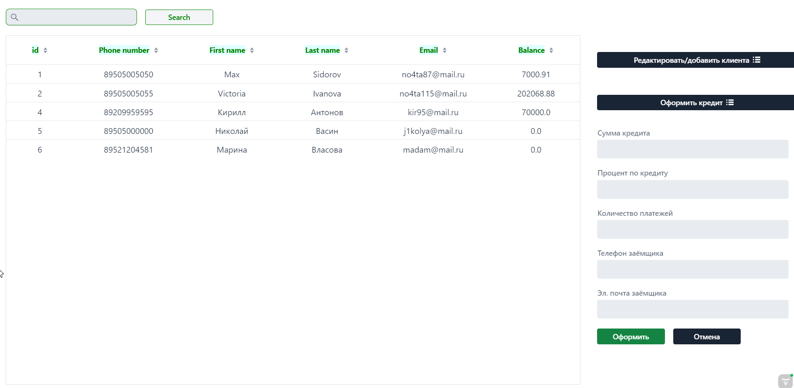
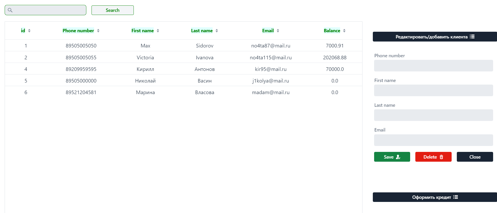
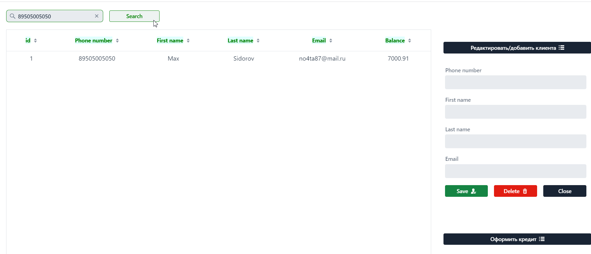

Экспериментальный проект на java фреймворке Vaadin. Целью было ознакомление - для утоления любопытства, и оказалось - весьма и весьма
интересно! С помощью java (пусть и с ангуларом под капотом) можно реально писать вполне достойные CRM системы! Мне помогло крепкое знание
основ html и css. Опыт окупился с лихвой, позволив создать программу, которую я в будущем планирую подключить к микросервисной архитектуре банка.



Данная програма позволяет добавлять клиентов, оформлять кредиты. Проект подключен к той же БД что и БАНК. Присутстует логика
защиты от дублирования клиентов.
Что смог: овладеть новым фреймворком. Добавить контент, отличающийся от "учебного". - твёрдое понимание что и как работает - есть.
Что не получилось: добавить в проект аутентификацию. Найду способы, решу проблему.
Полный проект на github